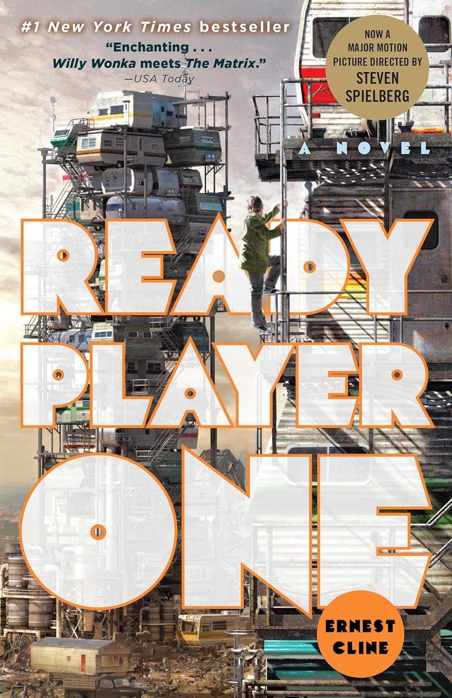

Favorite Book
Ready Player One is a science fiction novel by Ernest Cline. It takes place in the year 2045, where the world is in shambles and people escape their reality by playing a virtual reality game called the OASIS. The creator of the OASIS, James Halliday, dies and leaves his fortune to whoever can find the Easter Egg hidden in the game. The story follows Wade Watts, a teenager who is obsessed with the OASIS and Halliday, as he tries to find the Easter Egg before the evil corporation IOI does.
Favorite Songs
Terraria - Sinkholes of Darkness
Sinkholes of Darkness is a song from the video game Terraria, and is found in the Terraria (Otherworld) Soundtrack. It plays while fighting some of the hardmode bosses when the Terraria Otherworld soundtrack is selected. Personally, I think this is one of the cooler sounding songs in the game.
Mr. Brightside
Mr. Brightside is a song by The Killers. It was released in 2003 and is the first track on their album Hot Fuss. It is one of the band's most popular songs and is often played at sporting events.
Favorite Movie
The Five Nights at Freddy's movie is about a security guard who works at a pizza place called Freddy Fazbear's Pizza. The animatronics at the restaurant come to life at night and try to kill the security guard. The movie is based on the video game series of the same name.